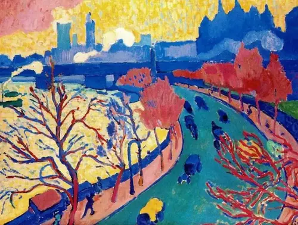
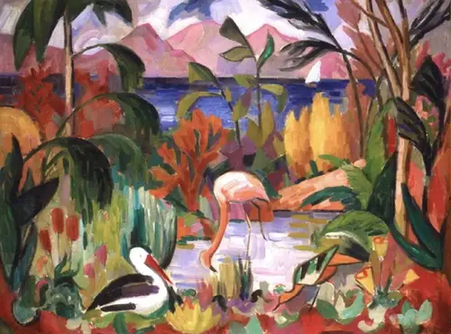
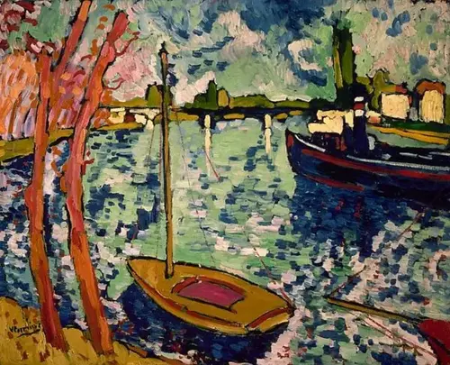
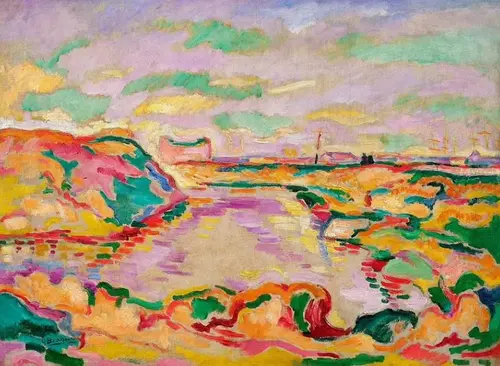

野兽主义
野兽主义是1905年左右在法国出现的艺术运动。这一流派以其鲜艳、纯净的色彩和简单、直接的表达而闻名。野兽主义艺术家追求直观和感性的表达，摒弃了传统的透视和模仿自然的手法。
艺术家介绍
杜菲
幸福的色彩之歌：杜菲 Raoul Dufy 1877 ~ 1953 France
杜菲擅长风景画和静物画，他运用单纯线条和原色对比的配置，活泼的笔触，将物体夸张变形，追求装饰效果。 后期从事织物图案、陶瓷画、壁画的设计制作，留下许多杰出代表作。
杜菲创立了“色彩 - 光线理论”：他认为色彩的明暗度在光线下是相同的，胜过色彩本身; 色彩捕捉住光线，是属于整体性的。 每一个主体或每一组主体，都有自己的光线，他们接受相同的反射及艺术家的决定安排，以色彩来创造出光线，而非反之。 艺术家可以给任何物体任何颜色，但却不能创造光源。 因此他反对摹写大自然，有重组景物的观念。
马谛斯
色彩的游戏家：马谛斯 Henri Matisse 1869 ~ 1954 France
为了自己的绘画注入活力，表现出动态、音乐性和节奏。 马谛斯已经得出结论，他认为色彩的功能不在于对光线的模仿，而是在于创造出光线。 印象派以冷或暖来理解色彩的概念。 而马谛斯此时想做的是透过色彩的对比表现出光线，透过将明亮的配色方案在一起放射出光线。
马谛斯向点描主义阶段性的靠拢，只不过是通向更大胆、更紧密的色彩和形体使用的垫脚石。 在此之后，他发展出野兽派的画风，完全脱离了新印象主义的表面性和形式化的「美丽」。
作品赏析
查令十字桥——安德烈·德兰
查令十字桥是法国艺术家安德烈·德兰 （André Derain） 的一幅画，他在 20 世纪初访问伦敦时创作。这是他在两次访问这座城市期间创作的大约 30 幅画作之一。德兰的这幅画被认为是野兽派艺术运动最伟大的例子之一。并非来自现实的鲜艳色彩。建筑物是蓝色的，树木是红色的，天空是黄色的，这使它成为伦敦有史以来最杰出的画作之一。
有水生鸟类的彩色景观——让·梅辛格
《水生鸟类的彩色风景》或“Paysage coloré aux Oiseaux Aquatiques”是一幅对立体主义艺术运动影响深远的画作。法国画家和色彩理论家让·梅辛格（Jean Metzinger，1883-1956）使用野兽产生的色彩来描绘热带风景。 梅辛格的这幅画被定义为“原始立体主义”画作，艺术家在其中向他之前的几位艺术家致敬。其中一些包括保罗·高更（1848-1903）、保罗·塞尚（1839-1906）和亨利·卢梭（1844-1910）。后者是梅辛格的密友，他创作了几幅热带风景画。
沙图的塞纳河——莫里斯·德·弗拉明克
沙图的塞纳河是莫里斯·德·弗拉明克（Maurice De Vlaminck）的画作，莫里斯·德·弗拉明克（Maurice De Vlaminck）是另一位艺术家，也是野兽派艺术运动的领军人物之一。《沙图的塞纳河》是他这一时期最著名的作品，目前在纽约市大都会艺术博物馆展出。 这幅画描绘了他的家乡查图，他 16 岁时搬到了那里。这个小镇位于巴黎以西，虽然当时它是大城市之外的一个安静的乡村小镇，但今天它实际上是巴黎的郊区。艺术家与Derain一起在这里创办了“Chatou学校”，专注于鲜艳色彩的使用。
安特卫普附近的风景——乔治·布拉克
《安特卫普附近的风景》是乔治·布拉克 （Georges Braque） 于 1906 年 7 月在巴黎独立沙龙 （Salon des Indépendants） 举办的展览失败后创作的一幅画。他在那里展出了画作，并在不久后全部销毁。毕竟，这里也是展示“Le Bonheur de Vivre”和其他著名的野兽派画作的地方。 1906 年夏天，他前往比利时城市安特卫普，通过使用极其鲜艳的色彩从根本上改变了自己的风格。安特卫普附近的风景是布拉克当年艺术转变的最好例子之一。